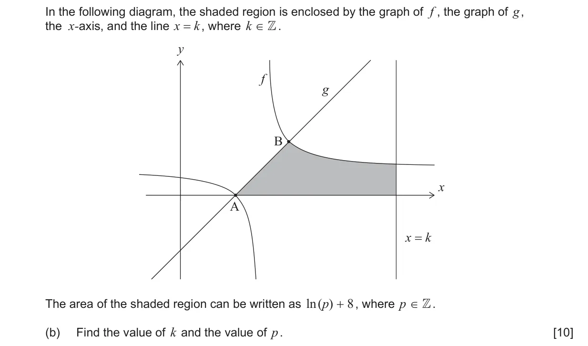
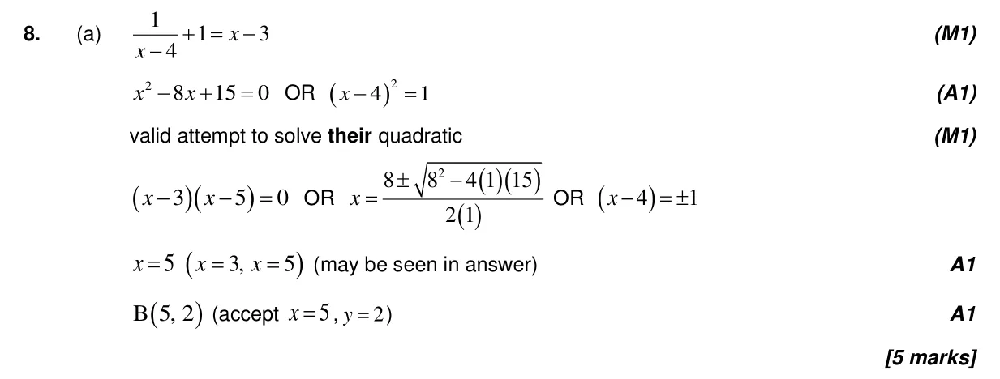
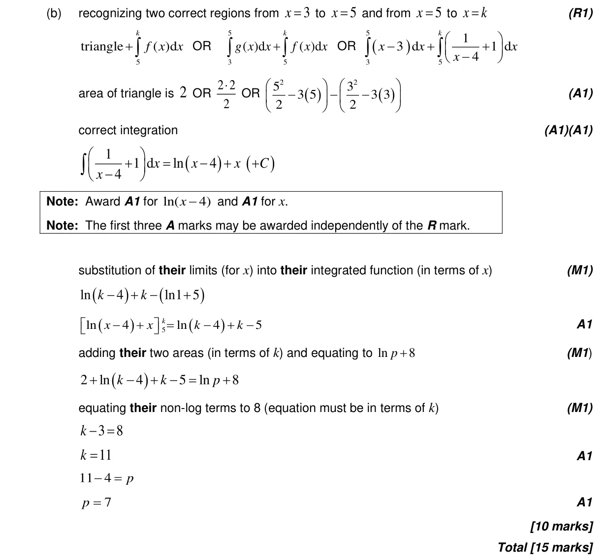

15 marks P1 TZ2 Section B No calculator 5.11 Definite integrals, areas under curve onto x-axis and areas between curves5.10 Indefinite integration, reverse chain and substitution2.7 Solutions of quadratic equations and inequalities, discriminant and nature of roots2.8 Reciprocal and simple rational functions, equations of asymptotes Question Hide breakdown ab Markscheme 